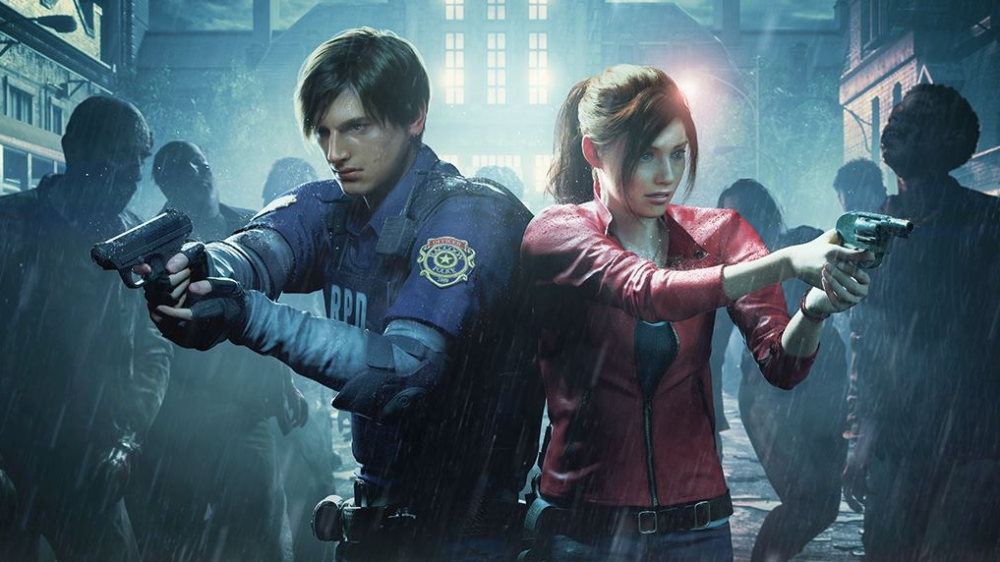

Первый рабочий день Леона Кеннеди обернулся кошмаром. 21-летний парень приехал в Раккун-Сити утром, а к вечеру город уже был заполонен зомби. Вместе с Клэр Редфилд, которая искала брата, он пытался выжить в полицейском участке. Там Леон встретил загадочную Аду Вонг — девушку, которая оказалась шпионкой, охотящейся за вирусом. Когда на них напал Тиран, Ада "погибла", но перед этим успела сбросить Леону ракетницу, чтобы он мог убить монстра. В конце Леон спас маленькую Шерри Биркин и выбрался из города за минуту до того, как его стерли с лица земли ядерным ударом. Этот день превратил наивного новичка в циника, и правительство США сразу же завербовало его.

Спустя шесть лет 27-летний Леон стал агентом секретной службы и отправился в Испанию спасать дочь президента Эшли. Местные жители оказались заражены паразитом Лас-Плагас и подчинялись безумному культу. Сам Леон тоже заразился, но продолжал искать лекарство. Он встретил бывшего наставника Краузера, который предал его, и убил его в бою. Ада Вонг снова появилась из ниоткуда, помогла, а потом исчезла. Из напуганного парня Леон превратился в мастера едких шуток и боевых приемов — именно тогда появился его знаменитый удар с ноги.
К 35 годам Леон стал ветераном спецслужбы DSO. Президент США, его старый друг, решил публично раскрыть правду о Раккун-Сити, но в день речи город атаковали террористы с новым вирусом. Леону пришлось лично застрелить зараженного президента. Вместе с агентом Хеленой он раскрыл глобальный заговор, встретил повзрослевшую Шерри Биркин (которая тоже стала агентом) и снова столкнулся с Адой. В этой части Леон показан уставшим ветераном, раздавленным грузом прошлых решений, но продолжающим делать свою работу.
В 49 лет Леон возвращается туда, где всё началось — в Раккун-Сити спустя почти 30 лет после его уничтожения. Игра называется Requiem, и это грандиозный финал саги для одного из любимейших персонажей. На промо он выглядит уставшим, с щетиной, в своей культовой куртке с меховым воротником из четвертой части. Леону предстоит встретить новых героев и поставить точку в многолетней войне с биооружием.
Официальный сайт Resident Evil